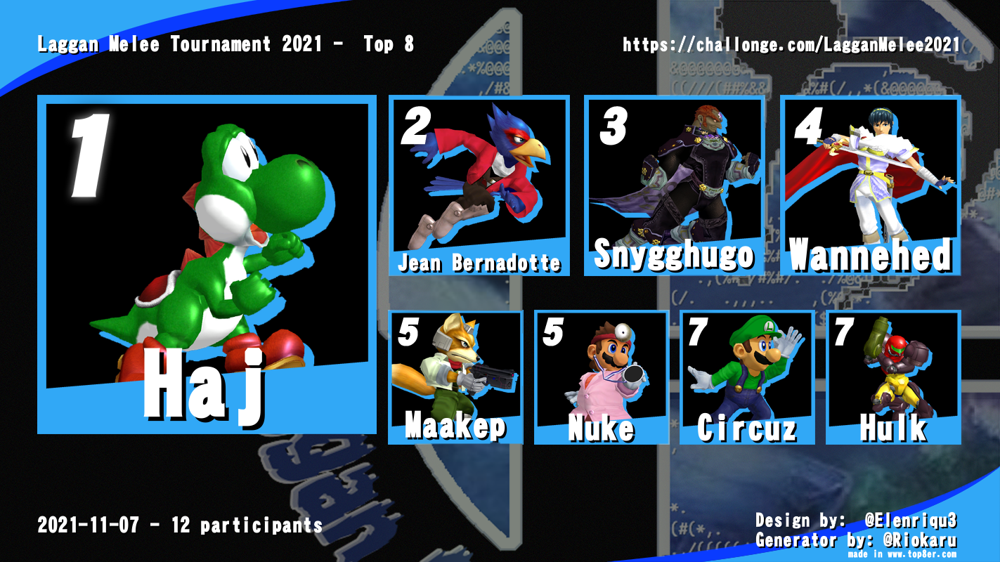

Previously, people have competed. These are results.
On the 7th of November,
the first Laggan
Single Player Torunament was played, testing the athletes in the honorable
sport of Melee.
12 players in total joined the competition, with skill levels ranging from those who had participated in local
tournaments and knew all about framedata and L-canelling, to first-timers with no previous Melee
experience.
The group stages began with @uschtvii#4333 taking a convincing lead, with 11
straight clean wins. Having lost just once, right behind him was @Maakep#8596,
the only member of
Laggan who had not done any training in advance for the tournament, instead relying solely on the latent
strength of the pattented Maakep Gaming factor. In third place was @Haj#0188, just one win short on Maakep, with his
unpredictably dangerous Yoshi movement.
For the first half of the Main Tournament it seemed like the seeds of prophecy sown in the soils of the group
stage would come bloom to fruition; @uschtvii#4333
undefeated and the top players asserting their dominance.
But then as the two runner ups and old friends @Maakep#8596 and @Haj#0188 faced off for the second time, a shift occured.
@Maakep#8596 forsaking his trusty Marth, instead bringing out the Ganondorf and
then the Falco. And @Haj#0188 would offer some new moves in return, unveiling
his ferocious Fox.
Suddenly, @Haj#0188 took a historic win against his friend and Melee rival of
10 years. And thus the seals of old had been broken. @snygghugo#5201 battled and won against both @wannehed#3256 and @Maakep#8596, both of whom had
previously categorically rekt him.
But most surprisingly broke the throne, @Haj#0188 taking 3 games off of @uschtvii#4333 before an astounded audience, sending @uschtvii#4333 to the lower bracket.
@uschtvii#4333 looked beaten the first game against @snygghugo#5201 in the losers finals, but @uschtvii#4333 steadily regained his
composure to ensure a striking 3-1 win, ending the small piece of the hero's journey that @snygghugo#5201 had tasted.
Once again @Haj#0188 - the presumed bronze medalist and @uschtvii#4333 - who most had assumed to take the crown, were facing
off in the Winners Finals. Both players now looking unbelievably strong, each taking one game at a time off of
the other, until @uschtvii#4333 finally siezed the final win to complete the
set, and thus confirming the bracket reset.
In the Grand Final the avians felt confident, with @uschtvii#4333 taking a solid
game off of, but the dino bros of @Haj#0188
knew that their Yoshi was playing out of his mind, out of this world, and always just out of @uschtvii#4333's reach.
In the end, the Laggan Oficiall Melee Torunament 2021 could have just been called "Yoshi's
Story".

And last but CERTAINLY not least, the tournament was
the first showing of the future Grand Champion of All Of Smash.....
Laggan Official Melee Tournament 2021 was made brought to life and made possible by Legendary Osu Player and
Adequate Smash Gamer @borzoi#8259, who set everything up and acted as TO. A
herculean effort!
It wouldn't have been half as fun if it wasn't for the commentary of the Legendary Smash Player and Adequate Osu
Player @Poppm🅰ister6000#7105, backed up by Laggan New Blood and co-host @wannehed#3256.
And it wouldn't have become the great grand thing that it became if it were not for
everyone, of all skill
levels, of all bracket results, joining together to watch and cheer and fight and frollick in
general! Big thanks to @everyone who participated!
LAGGAN
NEWS:
29/5/2021: @Lag-Gan wins the
Sonic Robo Blast 2 Kart
sport. @Naone is plagued with the @Goblinscourge. The rolecall @MOONSLAM is used to call the gamers.
5/6/2021: @Lag-Gan wins the
Ace of Spades sport. Burying
intelligence is looked down upon.
18/6/2021: The first (of many) draws as a result of
"unclear" ruleset in the Zero-K sport. @Tod
the cunning and wise made an unwise decision regarding zombies.
3/7/2021: @Lag-Lag scores
their first real win in the
Empty Epsilon sport. A very clever
goblin-based-alternate-reality-game is played. @Naone recovers from the
@Goblinscourge.
17/7/2021: @Lag-Gan wins at
Barotrauma. @Maakep sees fit
to fudge the rule of democracy a little
bit. A commendable decision. The rolecall @barabaras is used to call the
gamers.
31/7/2021: The first ever Septogame
- The Seating of Septothrone is held. I
don't remember all the details, but just like before there's some weird judge ruling. Sonic Robo Blast 2
Kart, Ace of Spades, Not-Hockey Questionmark and finally Killer Queen Black might have been the games.
Gamecubes are spent and forgotten. A jigsaw puzzle becomes the most appreciated game of the tournament.
The rolecall @queens is used to call the gamers.
@Lag-Gan won
the first Internetional!
@Lag-Gan 2020(1) were:
Toste
Sara
Joel
Niklas
Fredrik
Chris
Linus
Max
Charlie
They decided for Laggan to root for the Alliance,
for the new bots to be named SyntHugo and Rob(bot).
The first-ever losing team of @Lag-Lag are: VictorEdwinTodMitchMagnusLudvig
Dennis
Past events!
Sport
Date
Host
Athletes
It's MELEE, BABY
7th of November
13:00 Group Stage
18:00 Main Stage
Challonge
Linus @borzoi#8259
Victor @nuke#3998, Chris @Clam#8208, Magnus
@Haj#0188, August @Circuz#4554, Claes
@uschtvii#4333, Hugo @snygghugo#5201,
Linus
@borzoi#8259, Isac @wannehed#32560,
Mitch
@Mbar4660#6081, Fredrik @Maakep#8596,
Max
@Hulk#6170, Dennis @Deriel#8785
Want to join or have any questions? Just ping Linus @borzoi#8259
The International Viewing Party/Bar Time
16th of October
09:00 Breakfast!
12:00 More games! 17th of October
09:00 Breakfast!
12:00 Grand Finals!
Hugo @snygghugo#5201
Hugo @Snygghugo#5201, Claes @uschtvii#4333,
Edwin @Naone#6104, Mitch @Mbar4660#6081,
August @Circuz#4554, Victor @nuke#3998,
Ludvig
@Spacehippo#7460, Max @Hulk#6170,
Dennis @Deriel#8785
Want to join or have any questions? Just ping Hugo @snygghugo#5201
 @Lag-Gan won
the first Internetional!
@Lag-Gan won
the first Internetional!

 asking him if he was interested in putting together a team.[1] Looking back at the glory days of his early career, his decision was to try to go with an all-swedish lineup in the same spirit as his oldest and most successful team, SK Gaming of the 2008 era. He and fellow Swedish support veteran Akke's, eyes fell upon rising Swedish solo-mid star s4, whom Loda had noticed during their HoN days. s4 and AdmiralBulldog were playing for the new upstart team No Tidehunter created by s4 and Canadian support player EternaLEnVy. In late October 2012, it was announced that Loda and Akke had joined team No Tidehunter,[2] only one month before Dreamhack Winter 2012 which the team had qualified for with a mixed roster including German carry Black^. Winning the DreamHack Winter tournament in such short time after the Swedish veteran duo's inclusion surprised many and established the team as one of the best teams in the west. During the finals, in which they were trailing 0-1, they managed to bait the entire EG squad into checking the Roshan-pit with an ingenious suicide by AdmiralBulldogs Natures Prophet, and subsequently getting the first blood and eventually turning the finals in front of the home crowd.[3] Alliance did not exist as an organization as of yet, but the team confirmed during the event that they were under contract by an unknown organization and that all the players had their trip to Jonköping paid for, including current captain EternaLEnVy who was flown in all the way from Canada.") ,
for the new bots to be named SyntHugo and Rob(bot).
,
for the new bots to be named SyntHugo and Rob(bot).